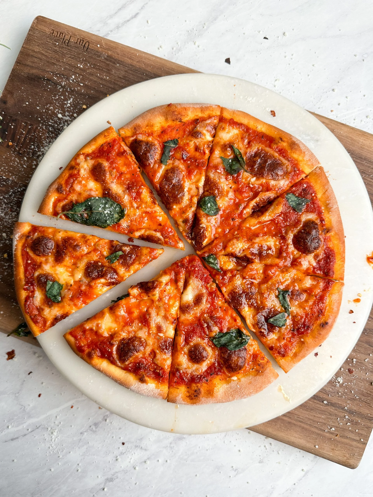

Simple Homemade Pizza
Crispy crust topped with melty cheese and your favorite toppings.
Ingredients
- 1 batch pizza dough
- 200 ml tomato sauce
- 150 g mozzarella
- 50 g pepperoni slices
- ½ tsp dried oregano
Steps
- Preheat oven to 230 °C (450 °F).
- Roll out dough on a floured surface.
- Spread sauce, sprinkle cheese, and add pepperoni.
- Season with oregano.
- Bake 12–15 minutes until crust is golden.
- Slice and serve hot.